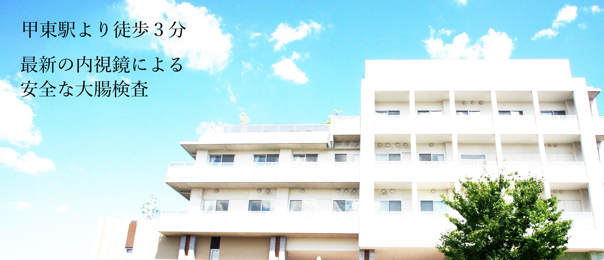

〒430-00XX
東京府甲東区鹿羽3-2-1
TEL 000-0000-XXXX
MENU
 お知らせ
お知らせ
12/XX
新型コロナウイルスについてのお知らせ。
12/XX
医療機関誌・楓葉１１月号に当クリニックが紹介されました。
12/XX
秋原医師が内科医療連盟に表彰されました。
12/XX
このサイトは祐介が練習のために作った作品です。架空の病院を紹介しています。
当院の紹介
診療案内
一般内科
感冒や発熱、頭痛などの疾患。糖尿病、高血圧などの生活習慣病まで広く診療を行っております。
消化器内科
胃炎、十二指腸潰瘍、腸炎などの胃腸の疾患。肝疾患、胆石や膵炎など消化器全般の診察を行っております。
また、消化器疾患の内視鏡検査、内視鏡治療なども行います。
診療時間
午前８：３０〜１２：００
午後２：００〜６：００
受付は診療時間終了の３０分前に終了します。
医師の紹介
医師からのご挨拶
患者様の心と正面から向き合い、大事な健康を保つことができるように、誰にでも伝わる言葉と人としての温かみのある医療を提供することを最優先に、診療を行っていきたいと考えております。皆様のために誠心誠意努めてまいります、今後ともよろしくお願いいたします。
【院長】秋原 聡
学歴
甲東医科大学医学部大学院 卒業
職歴
甲東病院内科 入局
蒲楚厚生病院
六村内科 院長
2020～ 秋原内科クリニック開設
専門とする疾患
・大腸カメラ
・内視鏡
スタッフより
患者様のことを第一に、スタッフ全員がいつも笑顔を絶やさずに、皆様のご健康を支えてまいります。
気になることがありましたら、遠慮なくお声をおかけください。
Q＆A
駐車場は何台ありますか？
１５台分用意しております。甲東駅より徒歩3分の立地にあるため、電車、バスなどで来られる方も多くいらっしゃいます。
検査に予約は必要ですか？
胃カメラの場合は予約の必要はありませんが、検査のため前日の夜9時～翌日の通院まで絶食していただく必要があります。大腸カメラ、エコーは完全予約制になります。
夜間の診察はできますか？
申し訳ありませんが、夜間、休日の診療は行っておりません。
この病院は存在しますか？
残念ながら架空の病院になります。
 アクセス
アクセス
秋原内科クリニック
〒430-00XX 東京府甲東区鹿羽3-2-1
TEL 000-0000-XXXX
甲東駅より徒歩５分
障害者用駐車場あり